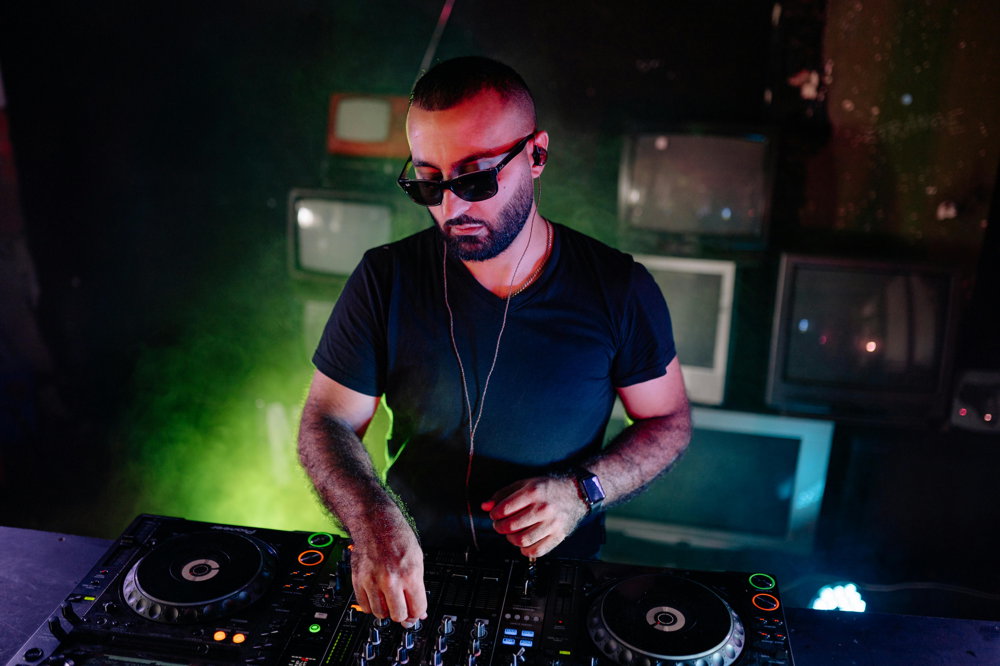

La fiesta electrónica que transformó la costa argentina
19 de octubre de 2025
Con luces, ritmo y energía sin límites, la playa de Mar del Plata se convirtió en una pista de baile al aire libre durante el evento Electronic Night 2025. Miles de personas asistieron para disfrutar de un espectáculo visual y sonoro único, con la participación de DJs nacionales e internacionales.
El evento se destacó por su impresionante puesta en escena: pantallas LED, láseres, efectos pirotécnicos y un sonido envolvente que hizo vibrar a toda la ciudad costera. Además, se instaló un espacio chill-out para los asistentes y se promovió el uso responsable de materiales reciclables.